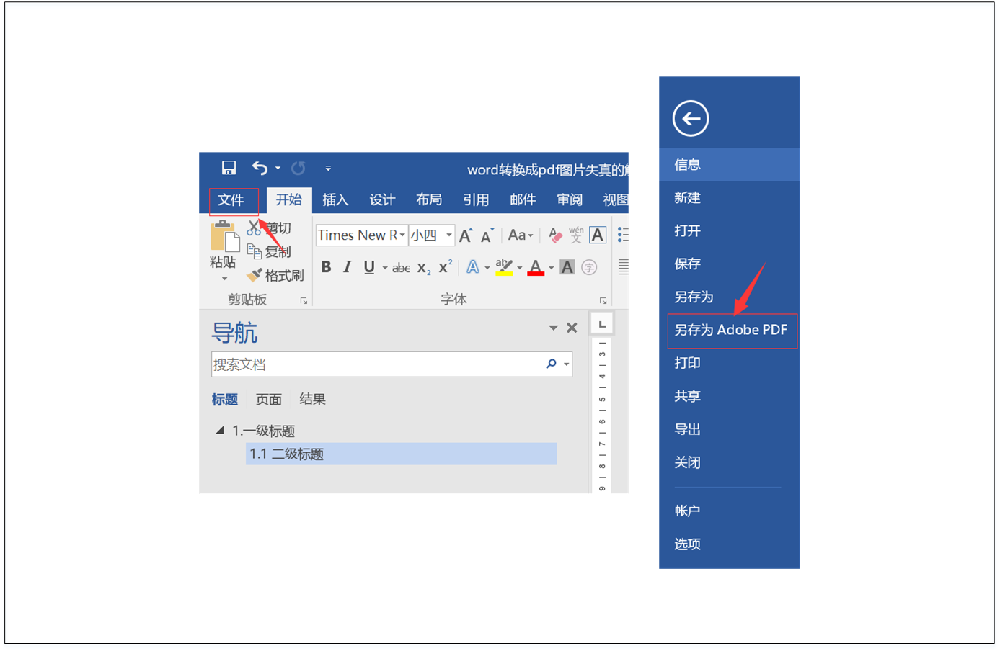

word转换为pdf后图片失真的解决办法
解决word转pdf图片失真的最终方案，并且有目录书签。
01 | 需要的软件
Adobe Acrobat Pro DC这里需要各位小伙伴自己上网找资源，下载安装之后会出现下面两个应用。
打开word之后，会发现在上方选项卡会出现Acrobat的插件。
如果没有出现Acrobat插件也没关系，可以按照以下步骤打开Acrobat插件：依次点击 文件->选项->加载项->管理COM加载新->转到->勾选“Acrobat PDFMaker Office COM Addin”->确定
02 | 配置Acrobat PDFMaker
（1）点击word选项卡上的Acrobat插件，（2）点击“首选项”按钮，（3）点击“高级配置”按钮（4）点击左侧“图像”按钮
（5）将右侧所有选项全部选为“关”的状态（6）另存为“Press Quality(1).joboptions”文件，然后点击“确定”关闭窗口
03| 更改Acrobat PDFMaker中的首选项
（1）点击word选项卡上的Acrobat插件，（2）点击“首选项”按钮，（3）点击“转换设置”，更改成刚才保存的“Press Quality(1)”，
（4）点击“确定”，关闭窗口
04| 将word转换成pdf
依次点击 文件->另存为Adobe PDF

下图（左）采用上述转换方法后的pdf，图（右）是采用普通的转换方法后的pdf，清晰度情况一眼便能看出，并且采用上述转换方法后的pdf也有目录。
其他：图片设置
如果打印出来的pdf太大，可以使用下面的方法
这样可以图片保证质量，又兼顾体积不会太大。但是实际测试没有无压缩的图片清晰度高。
另一个知乎回答看的：将图像的输出调一下，①彩色图像：缩减像素采样：平均缩减像素采样600dpi，若…900dpi JEPG 最大化；②灰度图像：双立方缩减像素采样300dip，若…450dpi， JEPG 最大化；③黑白图像：双立方缩减像素采样1200dip，若…1800dpi。既可以保证质量，又兼顾体积不会太大